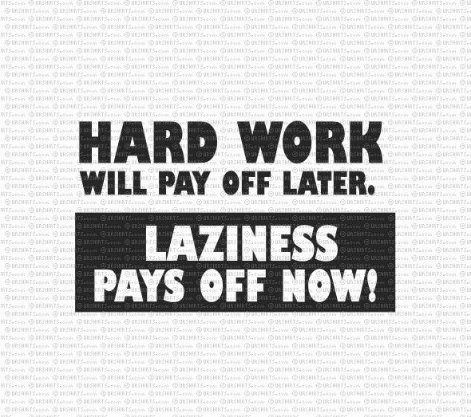

গোছানো মানুষদের ১০টি স্বভাবে
মানুষ জন্ম থেকেই ভালো অভ্যাস নিয়ে জন্মায় না। সময়ের সাথে সাথে ভালো অভ্যাস গড়ে তুলতে হয়। গোছানো মানুষদের ক্ষেত্রেও ব্যাপারটা একই। ধীরে ধীরে অভ্যাস গড়ে তুলে তারা শৃঙ্খলাবদ্ধ জীবন যাপন করে। গোছানো মানুষদের এমন ১০ টি স্বভাবের কথাই নিচে আলোচনা করা হলঃ
১। রুটিন বানানো এবং সময়সীমা নির্ধারণ করাঃ
গোছানো মানুষ সময় নষ্ট করে না। তারা এটা পরিষ্কারভাবে জানে যে গোছানো কাজ অধিক ফলপ্রসূ হয়। তারা প্রতি দিন এবং প্রতি সপ্তাহের জন্য রুটিন তৈরি করে। তারা সময়সীমা নির্ধারণ করে এবং লক্ষ্য স্থির করে। সবচেয়ে গুরুত্বপূর্ণ বিষয় হচ্ছে যে তারা সেগুলো খুব কঠোরভাবে মেনে চলে। কিন্তু অগোছাল্ভাবে জীবন যাপন করলে সময়সীমার মাঝে কাজ করার সময় বা সুযোগ হয় না।
২। লেখার অভ্যাস করাঃ
সামাজিক যোগাযোগ মাধ্যমের আবির্ভাবের আগেও এমন কিছু মানুষ ছিল যারা সবার জন্মদিন মনে রাখতো এবং শুভেচ্ছা জানাতো। এর মাঝে কোন জাদু ছিল না কিংবা তারা মুখস্থও করতো না। মুখস্থ করা তোমাকে গোছানো জীবনযাপন করতে সাহায্য করবে না। লেখার অভ্যাস করা এজন্যই গুরুত্বপূর্ণ।

খাতা-কলম, কম্পিউটার অথবা স্মার্টফোনে কোন কিছু লিখে রাখা তুলনামূলকভাবে স্থায়ী। প্রয়োজনীয় তারিখ এবং কাজের কথা মুখস্থ করার প্রচেষ্টা করলে জীবন বরং আরও বেশি জটিল হয়ে উঠবে। সবকিছুই লিখে রাখার অভ্যাস করো। যেমনঃ বাজারের তালিকা, ঈদের উপহার, গুরুত্বপূর্ণ তারিখ ইত্যাদি।
৩। নিয়মিত গোছানোঃ
প্রতি সপ্তাহে গোছানোর জন্য সময় বের করতে হবে। গোছানো মানুষেরা প্রতি সপ্তাহে বা আরও নিয়মিতভাবে সবকিছু গোছানোর জন্য সময় বের করেন। জিনিসপত্র আপনাআপনি গোছানো থাকে না, প্রতিনিয়ত গোছানোর মাধ্যমেই কেবল সবকিছু গুছিয়ে রাখা সম্ভব।
পরীক্ষামূলকভাবে তোমার রুটিন দেখে গোছানোর সময় বের করে গোছান শুরু করে দাও!
৪। শুধু প্রয়োজনীয় জিনিস রাখাঃ
যত অপ্রয়োজনীয় জিনিস রাখবে, ততই অগোছালো হবে। যারা গোছানো জীবনযাপন করে, তারা শুধু অত্যন্ত দরকারী জিনিস রাখে। যত অল্প জিনিস থাকবে, ততই তুমি সেই জিনিসগুলি উপভোগ করতে পারবে। আমাদের সবারই কোন না কোন সময়ে মনে হয়েছে যে আমাদের সকল জিনিস রাখার জন্য যথেষ্ট জায়গা নেই। এক্ষেত্রে বড় বাসায় চলে যাওয়ার থেকে কিছু জিনিস ফেলে দেয়া সমীচিন।
৫। শেষমুহূর্ত পর্যন্ত কাজ ফেলে না রাখাঃ
কোন কাজ করার জন্য তুমি যত দীর্ঘ সময় অপেক্ষা করবে, কাজটি করা ততটাই কঠিন হয়ে যাবে। জীবনকে কম চাপযুক্ত করার জন্য যত দ্রুত সম্ভব গোছানো জীবনে অভ্যস্ত হতে হবে। কোন কাজ দ্রুত করে ফেলার জন্য যথেষ্ট প্রচেষ্টা তোমার ওপর থেকে পরবর্তীতে চাপ কমিয়ে দিবে।
৬। সবকিছুর জন্য স্থান নির্ধারণ করাঃ
তোমার কোন বাড়ি না থাকলে হারিয়ে যাওয়াটাই স্বাভাবিক। তোমার জীবন গোছানো রাখার পূর্বশর্ত হচ্ছে সবকিছুকে তার যথাযথ স্থানে রাখা। গোছানো মানুষ জিনিসপত্র ভিন্ন ভিন্ন ধরণের জিনিস ভিন্ন ভিন্ন বিভাগে নির্দিষ্ট স্থানে যথাযথভাবে রাখার মাধ্যমে একটি সুনিপুণ পদ্ধতি দাঁড়া করায়।
যে জিনিসগুলি সবসময় কাজে লাগে, সেগুলোকে হাতের কাছে রাখা উচিৎ। তবে খেয়াল রাখতে হবে যেন সেগুলো অগোছালো না হয়ে যায়। সবচেয়ে গুরুত্বপূর্ণ বিষয় হচ্ছেঃ কখনোই কোন স্থানকে বিবিধ জিনিস রাখার জন্য ব্যবহার করা যাবে না। তাহলে, আবার সব অগোছালো হয়ে যাবে।
৭। অপ্রয়োজনীয় জিনিস না কেনাঃ
তুমি অপ্রয়োজনীয় জিনিস ফেলে দিয়েছ। পরবর্তীতে কেনাকাটা করতে গিয়ে আবার সেরকম জিনিস কিনে ফেললে। এ ধরণের কেনাকাটা তোমার গোছানো জীবনযাপনের পথে বাধা।
"গোছানো জীবনে দায়িত্বের আধিক্য থাকে না"
এজন্য কেনাকাটা করার সময় তোমার কি প্রয়োজন, সেটার একটা তালিকা বানিয়ে শুধু সেগুলোই কিনতে হবে। গোছানো মানুষ কখনোই অপ্রয়োজনীয় জিনিস কেনে না। অপ্রয়োজনীয় জিনিস তোমার জীবনকে অগোছালো করে তুলবে।
৮। অপ্রয়োজনীয় জিনিস ফেলার স্থান খুঁজে বের করাঃ
সকল সম্ভাব্য উপায়ে অপ্রয়োজনীয় জিনিস ফেলে দেয়ার ব্যবস্থা করতে হবে। কম জিনিস, কম স্তূপ। দান করে দেওয়া, অনলাইনে বেঁচে দেওয়া ইত্যাদির মাধ্যমে অপ্রয়োজনীয় জিনিস ফেলার স্থান খুঁজে বের করতে হবে। অপ্রয়োজনীয় জিনিস ফেলে দেওয়ার যথাযথ জায়গা বের করার অত্যন্ত গুরুত্বপূর্ণ।
৯। দায়িত্ব ভাগ করে নেওয়াঃ
গোছানো জীবনে দায়িত্বের আধিক্য থাকে না। বরং দায়িত্ব কম থাকে বলেই কম চাপের মাঝে গোছানো কাজ করা সম্ভব হয়।
পরীক্ষামূলকভাবে নিজের কাজের তালিকা দেখ। তালিকার মধ্যে যে কাজগুলো না করলেও চলবে, সেগুলো বাতিল করে দাও অথবা অন্য কাউকে দায়িত্বটা দাও। ফলে, তোমার ওপর চাপ কমে যাবে।
১০। কঠোর পরিশ্রম করাঃ
একটু কঠোর পরিশ্রম করো। যখন প্রয়োজন, তখন অনেক কঠোর পরিশ্রম করো। দায়িত্ব ভাগ করা এবং রুটিন বানানোর পর তুমি কোন কাজ কখন করতে হবে, তা গুছিয়ে নিতে পারবে।
গোছানো থাকা সহজ কাজ নয়। পরবর্তীতে গোছানো বাসা উপভোগ করার জন্য প্রাথমিকভাবে অতিরিক্ত কঠোর পরিশ্রম করতে হবে।
গোছানো মানুষেরা সহজেই তাদের দায়িত্ব পূরণ করতে পারেন। এজন্য আজকে থেকেই ওপরের কাজগুলো করা শুরু করে দাও সহজ, সুন্দর জীবনের জন্য!